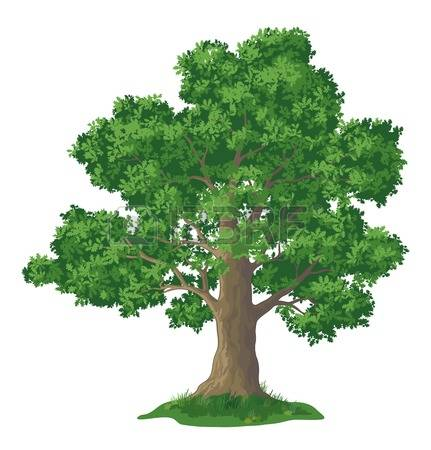
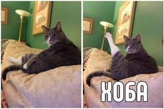

У лукоморья тоже нормально
- У лукоморья дуб зелёный;
- Златая цепь на дубе том:
- 
- И днём и ночью кот учёный
- 
- Всё ходит по цепи кругом;
- Идёт направо - песнь заводит,
- Налево - сказку говорит.
- Там чудеса: там леший бродит,
- Русалка на ветвях сидит;
- Там на неведомых дорожках
- Следы невиданных зверей;
- Избушка там на курьих ножках
- Стоит без окон, без дверей;
- Там лес и дол видений полны;
- Там о заре прихлынут волны
- На брег песчаный и пустой,
- И тридцать витязей прекрасных
- Чредой из вод выходят ясных,
- И с ними дядька их морской;
- Там королевич мимоходом
- Пленяет грозного царя;
- Там в облаках перед народом
- Через леса, через моря
- Колдун несёт богатыря;
- В темнице там царевна тужит,
- А бурый волк ей верно служит;
- Там ступа с Бабою Ягой
- Идёт, бредёт сама собой,
- Там царь Кащей над златом чахнет;
- Там русский дух... там Русью пахнет!
- И там я был, и мёд я пил;
- У моря видел дуб зелёный;
- Под ним сидел, и кот учёный
- Свои мне сказки говорил.